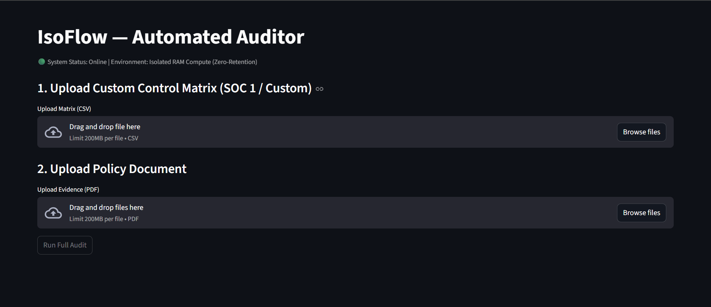
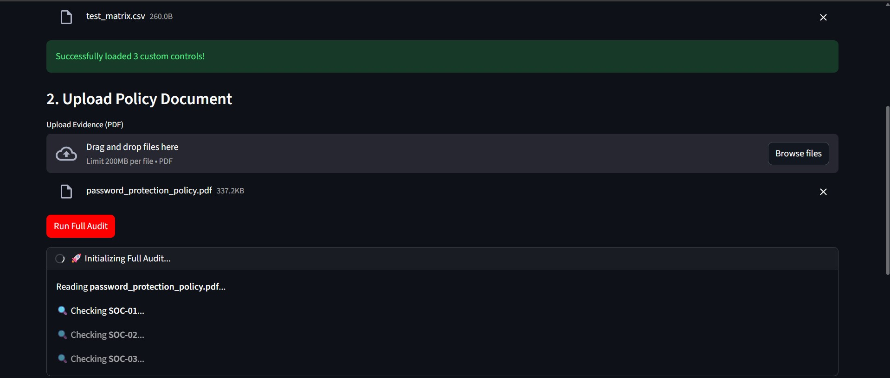
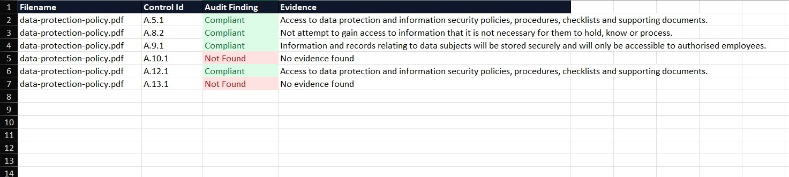

1. Provide source documents
Start with the policies and supporting documents relevant to the engagement.
IsoFlow helps compliance consultants turn policies and audit documents into structured evidence maps, with source references that reviewers can inspect and validate.
Human-reviewed service available by discussion. Self-serve engine subscriptions are not yet available.
A structured starting point for compliance professionals—not a replacement for expert judgment or auditor review.

Start with the policies and supporting documents relevant to the engagement.

Organize relevant source text against a control matrix and flag items that need closer review.

Use spreadsheet output to validate evidence references, identify gaps, and guide follow-up.
Designed to support the consultant’s review process from source to deliverable.
Policies and audit-related files
Relevant framework or custom matrix
Candidate matches and source references
Validate findings and identify gaps
Generated mappings are working material for a qualified reviewer. Control applicability, evidence sufficiency, accuracy, and final audit conclusions must be checked by the responsible compliance professional. Results can vary with document quality, control wording, and the engagement scope.
Start with a consultant-led engagement. Self-serve subscriptions will be announced when ready.
A scoped, human-reviewed service for teams or consultants who need help organizing document evidence against a control matrix.
A planned subscription for consultants who want a repeatable workflow across client engagements.
A planned higher-tier subscription for teams that need shared workflows and broader operational support.
Tier 2 and Tier 3 engine access will be available only through paid subscriptions after launch. No public engine access or free trial is offered.
Tell us about your compliance framework, source documents, and deliverable requirements. We’ll discuss whether a scoped mapping sprint is a fit.
Contact IsoFlowNo. The self-serve engine is not currently offered as a public product. Tier 2 and Tier 3 will be announced when paid subscriptions are ready.
No free trial or standalone public engine access is currently offered. You can request information about the Tier 1 human-reviewed service.
No. Mapping results support evidence review; a qualified professional must assess whether evidence is relevant and sufficient for the engagement.
Review the published security information and confirm the current processing arrangements with us before sharing sensitive client material. Do not submit confidential data until the handling terms have been agreed.
The proposed deliverable is a structured evidence map, typically in spreadsheet form. Exact scope, source references, and review depth are agreed before an engagement begins.
Email us with your framework, approximate document volume, and intended outcome. Please do not attach confidential documents in the initial enquiry.
Building practical compliance evidence workflows
IsoFlow is focused on helping compliance professionals spend less time organizing documents and more time reviewing whether the evidence supports the control.
View LinkedIn profile